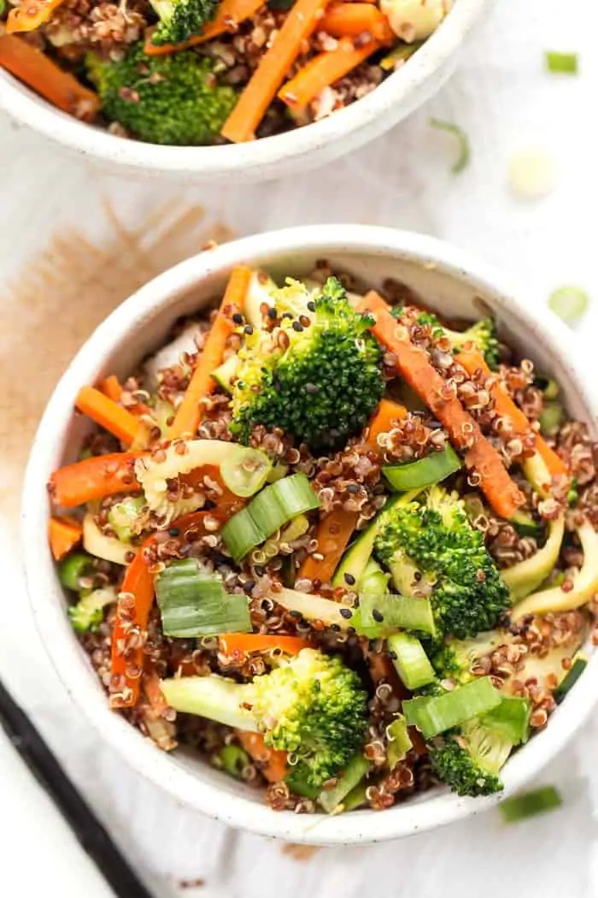

Ginger Quinoa Bowl

Description
These ginger quinoa bowls are a semi-spin on one of my classic stir fry recipes.
We're just amping up the ginger because why the heck not!? Ginger rocks,
it's great for your digestion and it actually goes SO well with quinoa!
Ingredients
- 3 tablespoon white sesame seeds
- 1 tablespoon toasted sesame oil
- 1 cup broccoli florets
- 1 carrot julienned
- 1 bell pepper julienned
- 1 small zucchini julienned
- 1 teaspoon grated fresh ginger
- 2 cups cooked red quinoa or any variety
- 1 tablespoon brown rice vinegar
- 1 tablespoon wheat-free tamari
- 1/2 cup scallions sliced
- pepper to taste
Steps
- Toast your sesame seeds. Place the seeds in a warm skillet and toss until they begin to brown and are slightly fragrant. Transfer them to a bowl and set aside.
- Heat the sesame oil in the skillet over medium-high heat. Add your veggies (minus the scallions), sauteing until they begin to soften, 3 - 5 minutes. Feel free to throw in a dash of water to give the vegetables a little steam, this will speed up the cooking process. Once they are softened,
add the grated ginger and sprinkle with salt and pepper. Saute together for 1 - 2 minutes.
- Add the quinoa to the pan, along with the toasted sesame seeds, brown rice vinegar and tamari. Stir all together to mix the flavors. Just before you're ready to serve, gently fold in your scallions.